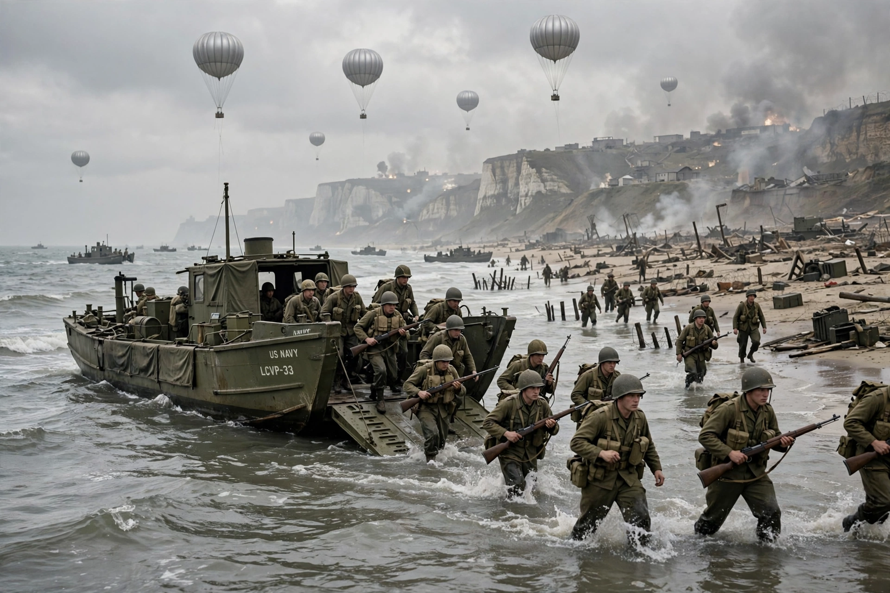

| Date | 6 June 1944 (D-Day) |
|---|---|
| Location | Normandy, France |
| Operation | Neptune, the assault phase of Operation Overlord |
| Forces landed on D-Day | c. 156,000 troops; nearly 7,000 vessels; c. 12,000 aircraft |
| Allied casualties (D-Day) | c. 10,000, including c. 4,400 killed |
| Result | Allied beachhead established in occupied France |
The Normandy landings were the landing operations and associated airborne operations on Tuesday, 6 June 1944 — D-Day — of the Allied invasion of Normandy in Operation Overlord during the Second World War. Codenamed Operation Neptune, it remains the largest seaborne invasion in history. The operation began the liberation of France and western Europe and laid the foundations of the Allied victory on the Western Front.
Supreme Allied Commander General Dwight D. Eisenhower and land forces commander General Bernard Montgomery planned the assault for a 50-mile stretch of the Normandy coast, divided into five beaches: Utah, Omaha, Gold, Juno and Sword. An elaborate deception plan, Operation Fortitude, convinced German commanders that the main invasion would fall at the Pas-de-Calais, and the dummy army and double agents used to sustain it kept the German Fifteenth Army idle for weeks after D-Day. The landings, postponed a day by bad weather, went ahead on Eisenhower's judgement of a brief improvement forecast for 6 June.
| Beach | Assaulting forces | Outcome |
|---|---|---|
| Utah | US 4th Infantry Division | Light casualties; link-up with 82nd and 101st Airborne |
| Omaha | US 1st and 29th Infantry Divisions | Heaviest resistance; c. 2,000 casualties; toehold won by nightfall |
| Gold | British 50th Division | Objectives largely taken; Arromanches secured for Mulberry harbour |
| Juno | Canadian 3rd Division | Advanced furthest inland of any force on D-Day |
| Sword | British 3rd Division | Beach taken; thrust toward Caen checked by 21st Panzer Division |
Airborne divisions dropped in the night to secure the flanks; naval bombardment and specialist armour (Hobart's "Funnies") supported the assault. Artificial Mulberry harbours and the PLUTO fuel pipeline sustained the build-up. By the end of June the Allies had landed some 850,000 men, but the bocage country and German resistance around Caen delayed the breakout until Operation Cobra in late July.
The landings are commemorated by extensive cemeteries and museums in Normandy, and remain a byword for combined-arms planning and multinational cooperation.
This article is a recreation from memory for the muse-webcrawl project.